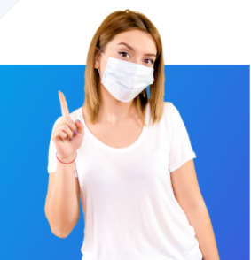

Preparations before Vaccine

the success of vaccines is strongly influenced by the
strength of the body's immune system. Therefore, there are
several things that can be tried to make the COVID-19
vaccine work:
Avoid alcoholic beverages
Avoid stress
Stress has a profound effect on immune work.
Moreover, prologend stress can increase cortisol
production and oxidative stress in the body.
Eat healthy food
Get enough sleep
Exercise or physical activity